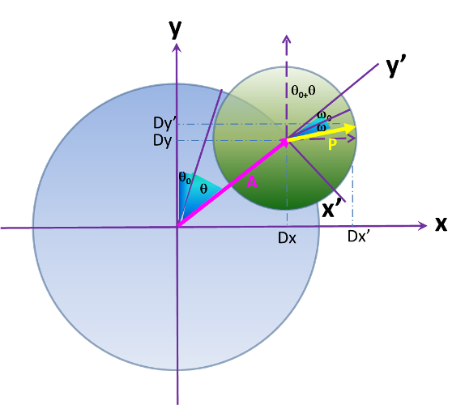
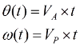
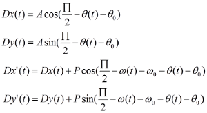
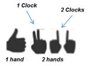
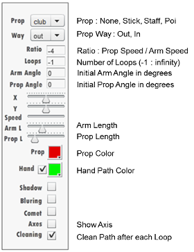

<h1>===== HELP =====</h1>
JuggleSpyro is a kind of Spyrograph for jugglers.
The goal is to model Spins, Antispins, Hybrids, Extensions, Isolations in a single plane ...
Modeling
The model used is the following :

- A: Arm length
- P: Prop length
- θ : Current Arm Rotation Angle
- θ0 : Initial Arm Rotation Angle
- ω : Current Prop Rotation Angle
- ω0 : Initial Prop Rotation Angle
The Prop is moving, the Arm also. If V is the circular speed, we have the following equations for both current angles at time t.

We then have the following equations for coordinates :

Menus
This tool offer 3 menus: one for a single hand view and two for both hands views. In These two last menus, one uses a single clock for both hands and the other one dedicates a clock to each hand. This last Async menu is experimental, you may have to fit the correct speed (not too speed, not too slow).
To navigate through these menus use :

The Following Prop Panel (one for each hand) is used to interact on the figure :

If the Ratio is negative, we then have an antispin, otherwise this is a spin. Mathematically Antispins are Hypocycloid curves (Ratio = -3=>Deltoid, Ratio = -4 and A=3P=>Astroid ...) and Spins are Epicycloid curves ((Ratio = 1=>Cardioid, Ratio = 2 and A=3P=>Nephroid ...).
Hereafter we have the Action Panel :
You will notice, there is a "Scenario" Mode. This mode allow the sequencing of several configurations. We will name these different configurations "Scene".
Scenario
A Scenario is a combination of one or several scenes.
All the scenario configuration has to be defined in an XML File according to the following syntax :
For each hand in each Scene, you may set different parameters that correspond to the ones you may find in both Props Panels.
- axisInitdx="INTEGER" : X coordinate value for Axis
- axisInitdy="INTEGER" : Y coordinate value for Axis
- propChoice="INTEGER" : Prop choice among 0 (None), 1 (Stick), 2 (Staff), 3 (Poï), 4 (Club)
- armWay="in" or "out" : Arm Way
- ratio="INTEGER" : Ratio between the Arm Speed Rotation and the Prop Speed Rotation
- nbloops="INTEGER" : Number of loops (-1 : infinity)
- armAngle="INTEGER" : Initial Rotation Angle for the Arm in degrees
- propAngle="INTEGER" : Initial Rotation Angle for the Prop in degrees
- speed="INTEGER" : Speed
- armLength="INTEGER" : Arm length
- propLength="INTEGER" : Prop length
- color_propPath="INTEGER" : Prop Color
- color_handPath="INTEGER" : Hand Path Color
- handPathView="BOOLEAN" : Set to true to draw the Hand Path
- shadow="BOOLEAN" : Add Shadows
- bluring="BOOLEAN" : A Bluring Mode
- comet="BOOLEAN" : No Path is drawed if set to true
- showAxis="BOOLEAN" : Show Axis or not
- cleaning="BOOLEAN" : Clean after each loop
- handPathEnd="INTEGER" : This is a special one, not found in the interface. It limits the rotation angle in degrees for the related hand.
If a parameter is not defined, the previous value is used; or the default one if none has been defined previously. Nevertheless you have to fill at least "nbloops" for both hands in any scene. A file "demo.xml" is provided by default as an example.
You can get the current scene configuration by clicking on the floppy icon.
Enjoy !
Frédéric Roudaut